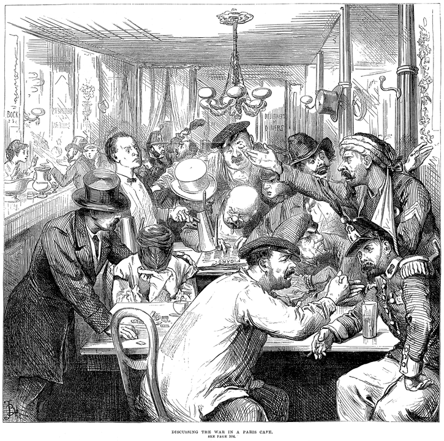
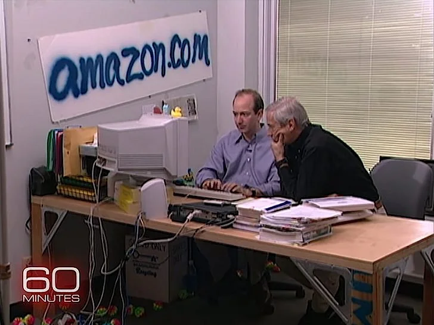
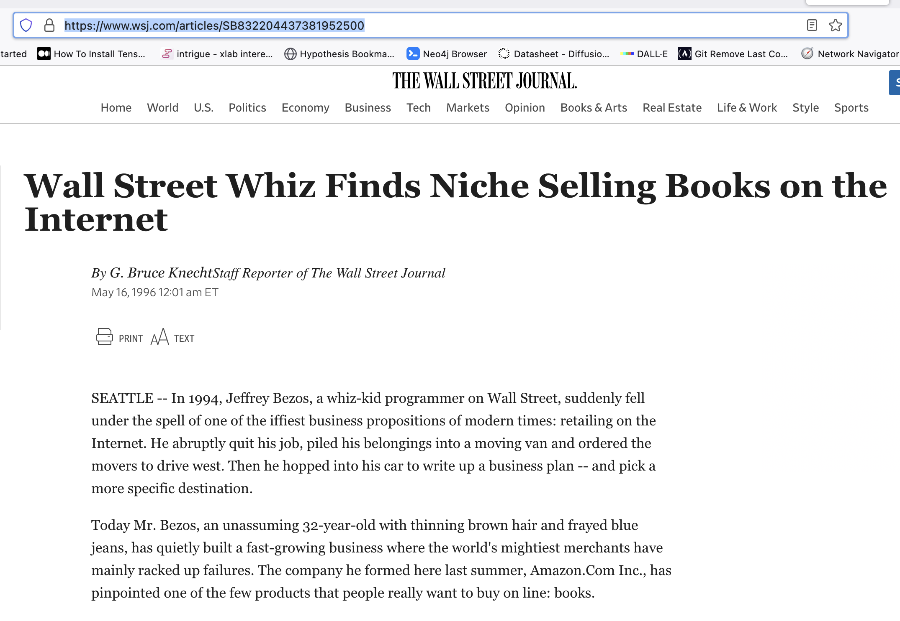

<!DOCTYPE html>
<html lang="en">
  <head>
    <meta charset="utf-8" />
    <meta name="viewport" content="width=device-width, initial-scale=1.0, maximum-scale=1.0, user-scalable=no" />

    <title></title>
    <link rel="stylesheet" href="dist/reveal.css" />
    <link rel="stylesheet" href="dist/theme/simple.css" id="theme" />
    <link rel="stylesheet" href="plugin/highlight/zenburn.css" />
	<link rel="stylesheet" href="css/layout.css" />
	<link rel="stylesheet" href="plugin/customcontrols/style.css">


    <script defer src="dist/fontawesome/all.min.js"></script>

	<script type="text/javascript">
		var forgetPop = true;
		function onPopState(event) {
			if(forgetPop){
				forgetPop = false;
			} else {
				parent.postMessage(event.target.location.href, "app://obsidian.md");
			}
        }
		window.onpopstate = onPopState;
		window.onmessage = event => {
			if(event.data == "reload"){
				window.document.location.reload();
			}
			forgetPop = true;
		}

		function fitElements(){
			const itemsToFit = document.getElementsByClassName('fitText');
			for (const item in itemsToFit) {
				if (Object.hasOwnProperty.call(itemsToFit, item)) {
					var element = itemsToFit[item];
					fitElement(element,1, 1000);
					element.classList.remove('fitText');
				}
			}
		}

		function fitElement(element, start, end){

			let size = (end + start) / 2;
			element.style.fontSize = `${size}px`;

			if(Math.abs(start - end) < 1){
				while(element.scrollHeight > element.offsetHeight){
					size--;
					element.style.fontSize = `${size}px`;
				}
				return;
			}

			if(element.scrollHeight > element.offsetHeight){
				fitElement(element, start, size);
			} else {
				fitElement(element, size, end);
			}		
		}


		document.onreadystatechange = () => {
			fitElements();
			if (document.readyState === 'complete') {
				if (window.location.href.indexOf("?export") != -1){
					parent.postMessage(event.target.location.href, "app://obsidian.md");
				}
				if (window.location.href.indexOf("print-pdf") != -1){
					let stateCheck = setInterval(() => {
						clearInterval(stateCheck);
						window.print();
					}, 250);
				}
			}
	};


        </script>
  </head>
  <body>
    <div class="reveal">
      <div class="slides"><section  data-markdown><script type="text/template"><!-- .slide: class="drop" data-background-opacity="0.5" data-background-image="https://www.wsge.org/wp-content/uploads/sites/41/2016/09/ilovethe90s.jpg" -->
<div class="" style="position: absolute; left: 0px; top: 0px; height: 700px; width: 960px; min-height: 700px; display: flex; flex-direction: column; align-items: center; justify-content: center" absolute="true">

# even more!
</div></script></section><section  data-markdown><script type="text/template"><!-- .slide: class="drop" -->
<div class="" style="position: absolute; left: 0px; top: 0px; height: 700px; width: 960px; min-height: 700px; display: flex; flex-direction: column; align-items: center; justify-content: center" absolute="true">

- [AI essay](https://shawngraham.github.io/hist1900/assets/slides/mar27#/35)
- [flooding the zone](https://www.vice.com/en/article/k7zqdw/people-are-creating-records-of-fake-historical-events-using-ai)
</div></script></section><section  data-markdown><script type="text/template"><!-- .slide: class="drop" -->
<div class="" style="position: absolute; left: 0px; top: 0px; height: 700px; width: 960px; min-height: 700px; display: flex; flex-direction: column; align-items: center; justify-content: center" absolute="true">

I love.... the 1720s?
</div>

<aside class="notes"><p>&#39;By the middle of the 1990s, approximately 450 companies appeared in what many referred to as the Dot.com revolution. Slightly less than a third of those companies failed with the end of the stock market bubble in 2000. The stocks of those that survived traded well below their historic high share prices. But the Dot.com phenomenon is more than a matter of speculation. Dot.com companies were deeply embedded in the recent economic and business history of the United States. They illustrate much about late twentieth-century changes in American business. To understand the rise of this new part of the economy one has to examine the growth of venture capital firms; the political economy of innovation tied to federal spending on the defense and space sectors; and the politics of central bank policy.&#39;
<a href="https://www.cairn.info/revue-entreprises-et-histoire-2006-2-page-34.htm">https://www.cairn.info/revue-entreprises-et-histoire-2006-2-page-34.htm</a> &lt;- put the title into scholar.google.com and you&#39;ll find the full text.</p>
<p>parallels between the first great speculative bubble and the dot com boom</p>
</aside></script></section><section  data-markdown><script type="text/template"><!-- .slide: class="drop" -->
<div class="" style="position: absolute; left: 0px; top: 0px; height: 700px; width: 960px; min-height: 700px; display: flex; flex-direction: column; align-items: center; justify-content: center" absolute="true">


</div>

<aside class="notes"><ul>
<li>introduction of coffee into western europe - a kind of mania for it. you&#39;d go to a public house to drink (wasn&#39;t even filtered in those days) - newspapers expensive, some places&#39;d have them up on the wall. a place to discuss, debate, get &#39;stimulated&#39;, hatch plans, schemes, share news, rumors, speculate. </li>
<li>London&#39;s were all for the most part close to the center of &#39;The City&#39;, the part within the original roman &#39;square mile&#39;, near the center of state power &amp; finance</li>
<li>this was the same period where limited stock companies first emerge (remember how the emergence of new corporate structures in the 19th century played a big role in telegraph/telephone/first internet?) so people trading stock tips, investment advice, insider trading - which wasn&#39;t a crime yet - things so new no categories or theories to guide them</li>
</ul>
</aside></script></section><section  data-markdown><script type="text/template"><!-- .slide: class="drop" -->
<div class="" style="position: absolute; left: 0px; top: 0px; height: 700px; width: 960px; min-height: 700px; display: flex; flex-direction: column; align-items: center; justify-content: center" absolute="true">

## South Seas Bubble
- British gov't needed refinancing of its debt after various wars
- South Seas Company has a promised monopoly on trade (slaving) to South America
- What it actually has is an arrangement to buy Gov't Debt
</div>

<aside class="notes"><ul>
<li>the company looks like it has trade, looks like it&#39;ll have a monopoly; this is an era where these royally chartered companies make money hand over fist over controling not just trade but also all aspects of colonization - military/corporatist model that persists well into 19th century - </li>
<li>but gov&#39;t has issued all sorts of debt instruments to try to raise money for its wars; can&#39;t really be paying everything back all the time to everyone it owes</li>
<li>it sells all of its debt to the SS company.</li>
<li>if the gov&#39;t owes YOU money, you sell your debt instrument to SS. They give you a share of the company in return.</li>
<li>SS gets an annual interest payment from the gov&#39;t, plus whatever revenues it makes from trade.</li>
<li>Pays its shareholders an annual dividend on that interest AND a portion of the profits from (slave) trade commesurate with number of shares you owned.</li>
</ul>
</aside></script></section><section  data-markdown><script type="text/template"><!-- .slide: class="drop" -->
<div class="" style="position: absolute; left: 0px; top: 0px; height: 700px; width: 960px; min-height: 700px; display: flex; flex-direction: column; align-items: center; justify-content: center" absolute="true">

Get Rich Quick
- shares rise from 124 pounds to over 1000
- **in 1720s value!!!!!!***
- price collapses by december 1720, ruining several fortunes
- scandal brings first modern prime minister to power, Robert Walpole
- beginning of regulation
</div>

<aside class="notes"><ul>
<li>stock market hasn&#39;t been around very long</li>
<li>nobody entirely sure what the SS company does</li>
<li>but its value and its stocks are the subject of discussion and hype in the coffee houses</li>
<li>people bought and sold the shares expecting the value could only go up in this &#39;new economy&#39; (make HUGE profits from slaving - though the company hadn&#39;t achieved that yet)</li>
<li>celebrity influencers were &#39;persuaded&#39; to &#39;buy&#39; shares - the SS company gifted them with stock - the influencer, instead of paying for the share, would hold on to them because they had the option of &#39;selling&#39; the share back at higher value - the appearance of enormous profit! These &#39;celebrities&#39; were politicians, nobles (right up to the King).</li>
<li>&#39;Look at how much those canny investors made, you can too!&#39;</li>
</ul>
</aside></script></section><section  data-markdown><script type="text/template"><!-- .slide: class="drop" -->
<div class="" style="position: absolute; left: 0px; top: 0px; height: 700px; width: 960px; min-height: 700px; display: flex; flex-direction: column; align-items: center; justify-content: center" absolute="true">

## Irrational Exuberance

- this time, it's different!
- Joseph Schumpeter, 'Creative Destruction'
- Get Fast Quick
</div>

<aside class="notes"><ul>
<li>aftermath of cold war</li>
<li>relaxing of certain fiscal discipline</li>
<li>belief in market creativity</li>
<li>hey, to make something new you have to destroy the old - actually a kind of marxist idea</li>
</ul>
</aside></script></section><section  data-markdown><script type="text/template"><!-- .slide: class="drop" -->
<div class="" style="position: absolute; left: 0px; top: 0px; height: 700px; width: 960px; min-height: 700px; display: flex; flex-direction: column; align-items: center; justify-content: center" absolute="true">

Amazon to Amazon.com

<split> 





</split>
</div>

<aside class="notes"><ul>
<li>Bezos - electrical engineering &amp; comp sci from princeton, 1986</li>
<li>joins wall street company, writes software to provide online access for customers</li>
<li>joins a hedge fund using computers to make rapid trades; in 94 is tasked to figure out how to make money from the web </li>
<li>decides that there are many areas where the &#39;real world&#39; market is disjointed and could be exploited.</li>
</ul>
<p> Becker, William H. “The Dot.Com Revolution in Historical Perspective.” Entreprises et histoire (Paris), vol. 43, no. 2, 2006, pp. 34–46, <a href="https://doi.org/10.3917/eh.043.0034">https://doi.org/10.3917/eh.043.0034</a>. <a href="https://ocul-crl.primo.exlibrisgroup.com/permalink/01OCUL_CRL/1ortgfo/cdi_crossref_primary_10_3917_eh_043_0034">https://ocul-crl.primo.exlibrisgroup.com/permalink/01OCUL_CRL/1ortgfo/cdi_crossref_primary_10_3917_eh_043_0034</a></p>
</aside></script></section><section  data-markdown><script type="text/template"><!-- .slide: class="drop" -->
<div class="" style="position: absolute; left: 0px; top: 0px; height: 700px; width: 960px; min-height: 700px; display: flex; flex-direction: column; align-items: center; justify-content: center" absolute="true">


Why Books?

- large industry ($25 billion in annual sales)
- large number of publishers (> 50 000 in US)
- independent book shops at retail; 2 chains < 25% of retail market
- chains had stores, assets, employees, warehouses => costs
- small independents had even higher cost per book than chains
</div></script></section><section  data-markdown><script type="text/template"><!-- .slide: class="drop" -->
<div class="" style="position: absolute; left: 0px; top: 0px; height: 700px; width: 960px; min-height: 700px; display: flex; flex-direction: column; align-items: center; justify-content: center" absolute="true">

- Bezos, the small entrpreneur?
	-  Gets a loan of $250 000 from **his parents**. 
- launches in 1995
- has ~ 1$ million in seed funds from local investors as well
</div>

<aside class="notes"><p>He also depends heavily on the funds and labour of his wife Mackenzie Scott</p>
<p>sets up shop in Seattle in close proximity to <strong>an existing book distribution warehouse</strong>. Also, washington had no sales tax. Bezos is always looking out for number 1.</p>
</aside></script></section><section  data-markdown><script type="text/template"><!-- .slide: class="drop" -->
<div class="" style="position: absolute; left: 0px; top: 0px; height: 700px; width: 960px; min-height: 700px; display: flex; flex-direction: column; align-items: center; justify-content: center" absolute="true">

Business model

- &shy;<!-- .element: class="fragment" data-fragment-index="1" -->Low prices?
	- &shy;<!-- .element: class="fragment" data-fragment-index="2" -->nope
- &shy;<!-- .element: class="fragment" data-fragment-index="3" -->buy your book online, they get it from the local warehouse, repackage it, and then mail it to you (taking advantage of existing gov't paid for infrastructure)
</div>

<aside class="notes"><p>nope:
Amazon burning through cash. First year had sales of <code>$511 000 but expenses of $</code>800 000. Labour intensive busienss.</p>
<ul>
<li>Bezos figures the only way he can make money is to expand volume; figures he can achieve that by 1997 if he can make sales of $10 million</li>
</ul>
</aside></script></section><section  data-markdown><script type="text/template"><!-- .slide: class="drop" -->
<div class="" style="position: absolute; left: 0px; top: 0px; height: 700px; width: 960px; min-height: 700px; display: flex; flex-direction: column; align-items: center; justify-content: center" absolute="true">

So... where's the exuberance?

- enter the VC
</div>

<aside class="notes"><ul>
<li>venture capitalists: one of the first VC firms on the west coast invested in Fairchild Semiconductor and Intel;</li>
<li>sometimes VC&#39;s were former entrpreneurs who had once made things. one such was Kleiner Perkins Caulfiedl &amp; Byers. Eugene Kleiner had been a founder of Fairchild Semiconductor, for instance.</li>
<li>VCs often structured as partnerships; partners put their own money in to whatever they invest in. They have &#39;limited partnerships&#39; where they take <em>other</em> people&#39;s money and invest that too - they charge the limited partners a fee of 1-2% to <strong>manage</strong> their funds, and then 20-30% profits due to their limited partners TOO.</li>
<li>What kinds of incentives does this create?</li>
<li>Bezos seeks these people out; best offer he gets, for a 10% stake in the business, was $1 million (hence, VC figures the business is only good for 10 million). Bezos refuses, wants more.</li>
</ul>
</aside></script></section><section  data-markdown><script type="text/template"><!-- .slide: class="drop" -->
<div class="" style="position: absolute; left: 0px; top: 0px; height: 700px; width: 960px; min-height: 700px; display: flex; flex-direction: column; align-items: center; justify-content: center" absolute="true">

## 16 May, 1996

Amazon.com gets a front page article on the Wall Street Journal:


</div>

<aside class="notes"><p>Talk about priming the bump - WSJ had 2 million copies a day circulation - sales <strong>doubled</strong> the day this appear</p>
<ul>
<li>the next VC offer was for <code>$50 million. Bezos eventually gets the $</code>60 million evaluation he wants, getting $8 million in cahs from Keliner Perkins.</li>
<li>by end of 1996, Amazon has sales of $8 million dollars: STILL NOT PROFITABLE </li>
<li>amazon had to pay about 16<code>$ per book for buying/shipping; advertising cost about $</code>8 per book; overhead <code>$1 per book - each book cost an average of $</code>25 to sell, for amazon BUT the average return on any given book was $20 - merely selling stuff isn&#39;t enough.</li>
<li>but Bezos is everywhere, giving talks, publicity, creating an aura of invicibility</li>
<li>Decides that he must rapidly expand to get bigger than any rival (thus killing rivals) - &#39;winner take all strategy&#39; - the idea that if you get big enough, customers have no choice but to deal with you, no matter what, the switching costs are too high (this becomes a key part of the enshittification of the net, which we&#39;ll see)</li>
<li>goes public: 23 million shares authorized, 3 million put up for sale at $18 per share (quick, 3 million x 18 is....?) = 54 million; for a total market capitalization of 414 million.</li>
</ul>
</aside></script></section><section  data-markdown><script type="text/template"><!-- .slide: class="drop" -->
<div class="" style="position: absolute; left: 0px; top: 0px; height: 700px; width: 960px; min-height: 700px; display: flex; flex-direction: column; align-items: center; justify-content: center" absolute="true">


</div>

<aside class="notes"><p>gold rush time</p>
<ul>
<li>in 1999, priceline.com - a company that resells airline tickets (it just sells you tickets that it grabs from the existing ticketing system, exploiting regional variations and other incongruities some accidental, many designed) has an IPO - produces 9.8 billion on the first day - more than what the 3 biggest actual airlines with staff, airplanes, hangers, infrastructure were valued - it also lost 114 million dollars in its first year</li>
<li>strategy emerges - get vc funding; spend to get big; don&#39;t worry about how much you&#39;re burning through, get those eyeballs in front! cash out in the IPO.</li>
<li>&#39;Speculation, according to a standard definition, is “the act of knowingly assuming above-average risks with the hope of gaining above-average returns on a business or financial transaction” A bubble or boom results from an asset being valued above what standard economic valuation would be, and continues to rise in value for a long period of time. There is also in booms and bubbles an element of crowd, or herd, behavior. Individually, one might be deeply skeptical about an investment, but once one sees others taking the risk of investing, and profiting from it, the barriers of experience and common sense come down.&#39;</li>
<li>it&#39;s 1720 all over again, and popular press, tv, media are playing the role that the coffee houses once played.</li>
<li>paper millionaires - many staff being paid in stock options, but they can&#39;t cash these out for one year - so obviously, in one year&#39;s time, something is going to happen...</li>
</ul>
</aside></script></section><section  data-markdown><script type="text/template"><!-- .slide: class="drop" -->
<div class="" style="position: absolute; left: 0px; top: 0px; height: 700px; width: 960px; min-height: 700px; display: flex; flex-direction: column; align-items: center; justify-content: center" absolute="true">

[pets.com](http://web.archive.org/web/19990508060549/http://pets.com/)

webvan.com
</div>

<aside class="notes"><p>they were trying to build complete infrastructure from scratch; amazon&#39;s genius was that it was parasitical - it exploited weaknesses and used other systems (post office) for itself</p>
</aside></script></section><section  data-markdown><script type="text/template"><!-- .slide: class="drop" -->
<div class="" style="position: absolute; left: 0px; top: 0px; height: 700px; width: 960px; min-height: 700px; display: flex; flex-direction: column; align-items: center; justify-content: center" absolute="true">


</div>

<aside class="notes"><ul>
<li>On March 10, 2000, the NASDAQ Composite stock market index peaked at 5,048.</li>
<li>Following that all-time high, the bubble popped causing many companies in the dot-com sector to crash.</li>
<li>By October 2002, stocks had declined in value by 75%.</li>
</ul>
</aside></script></section><section  data-markdown><script type="text/template"><!-- .slide: class="drop" -->
<div class="" style="position: absolute; left: 0px; top: 0px; height: 700px; width: 960px; min-height: 700px; display: flex; flex-direction: column; align-items: center; justify-content: center" absolute="true">

[wired's ipo watch](http://web.archive.org/web/20000621133949/http://www.wired.com/news/ipo)
</div></script></section><section  data-markdown><script type="text/template"><!-- .slide: class="drop" -->
<div class="" style="position: absolute; left: 0px; top: 0px; height: 700px; width: 960px; min-height: 700px; display: flex; flex-direction: column; align-items: center; justify-content: center" absolute="true">

Survivors, amongst others
- amazon
- ebay
-
</div>

<aside class="notes"><ul>
<li>web 1.0 tried to make money by selling actual things</li>
<li>clear that web wasn&#39;t like TV, but despite section 230, was very like print</li>
<li>so trying to get eyeballs in front of adverts; actually tracking individuals was both technologically not possible but morally repugnant at first - &#39;big brother&#39;</li>
<li>had to get people habituated. crazy advertising spends - superbowl ads!</li>
<li>govt encourages both through fiscal policy and also as vindication for earlier tech spending</li>
<li>&#39;new economy&#39; rhetoric</li>
</ul>
</aside></script></section><section  data-markdown><script type="text/template"><!-- .slide: class="drop" -->
<div class="" style="position: absolute; left: 0px; top: 0px; height: 700px; width: 960px; min-height: 700px; display: flex; flex-direction: column; align-items: center; justify-content: center" absolute="true">

Internet Archive - 1996

Nupedia / Wikipedia -
</div>

<aside class="notes"><p>nupedia starts in oct 1999; runs til sept 2003; had staff, editorial control, oversight, commissed articles. produced 24 articles. Free to read. Nupedia starts wikipedia in 2001 as a feeder system for generating content; dotcom crash, wales decides to fire staff; makes a virtue of volunteers! uses ward Cunningham&#39;s wiki software - invented in 1995. a kind of easy hypertext editing system; cunningham called it the &#39;simplest online database that could work&#39;</p>
<p>internet archive started by Brewster Kahle in 1996; he owned a web crawling company called Alexa Internet which provided analytical data on traffic, popularity of websites and so on (this was a thing that the SRI did for the original arpanet!) eventually bought by amazon in 1999. Easy to see how internet archive could be connected to alexa internet- a kind of front end on the data they were already collecting</p>
<ul>
<li>in the second version of the web, these sites generate the bedrock data on which many services are built</li>
</ul>
</aside></script></section><section  data-markdown><script type="text/template"><!-- .slide: class="drop" -->
<div class="" style="position: absolute; left: 0px; top: 0px; height: 700px; width: 960px; min-height: 700px; display: flex; flex-direction: column; align-items: center; justify-content: center" absolute="true">


lasting impact of the dot com boom 
- the internetification of logistics
- emergence of 'content'
- development of advertising
</div>

<aside class="notes"><p>- 
miriam&#39;s article - supply chain management <a href="https://www.newyorker.com/science/elements/the-software-that-shapes-workers-lives">https://www.newyorker.com/science/elements/the-software-that-shapes-workers-lives</a></p>
<ul>
<li>supply chain management software - SAP - Systeme, Anverdungen und Produkte - systems, applications, products. Series of modules that speak to other modules/installations of the software, such that your local walmart orders diapers, eventually a factory somewhere starts producing the necessary plastic, fabric, elastic, polymer absorbent pads, another schedules assembly, somewhere else cardboard boxes are designed, somewhere else printed... tries to mitigate the &#39;bullwhip&#39; effect - local manager decides to order 50 boxes instead of 25, diaper company orders 100 boxes to be made, on the safe side... etc. But this also has the effect of impact on workers lives - rescheduling shifts, hours, break time... early web services like pets.com bought up warehousing and logistics; amazon parasitized existing systems; ultimately, the solutions that we have right now emerge in parallel to the development of retailing online and the internetification of formerly independent chains. You can&#39;t actually know, in this system, the ultimate origin of products!</li>
</ul>
</aside></script></section><section  data-markdown><script type="text/template"><!-- .slide: class="drop" -->
<div class="" style="position: absolute; left: 0px; top: 0px; height: 700px; width: 960px; min-height: 700px; display: flex; flex-direction: column; align-items: center; justify-content: center" absolute="true">

Ok, about the final 'journey'...
</div></script></section></div>
    </div>

    <script src="dist/reveal.js"></script>

    <script src="plugin/markdown/markdown.js"></script>
    <script src="plugin/highlight/highlight.js"></script>
    <script src="plugin/zoom/zoom.js"></script>
    <script src="plugin/notes/notes.js"></script>
    <script src="plugin/math/math.js"></script>
	<script src="plugin/mermaid/mermaid.js"></script>
	<script src="plugin/chart/chart.min.js"></script>
	<script src="plugin/chart/plugin.js"></script>
	<script src="plugin/customcontrols/plugin.js"></script>

    <script>
      function extend() {
        var target = {};
        for (var i = 0; i < arguments.length; i++) {
          var source = arguments[i];
          for (var key in source) {
            if (source.hasOwnProperty(key)) {
              target[key] = source[key];
            }
          }
        }
        return target;
      }

	  function isLight(color) {
		let hex = color.replace('#', '');

		// convert #fff => #ffffff
		if(hex.length == 3){
			hex = `${hex[0]}${hex[0]}${hex[1]}${hex[1]}${hex[2]}${hex[2]}`;
		}

		const c_r = parseInt(hex.substr(0, 2), 16);
		const c_g = parseInt(hex.substr(2, 2), 16);
		const c_b = parseInt(hex.substr(4, 2), 16);
		const brightness = ((c_r * 299) + (c_g * 587) + (c_b * 114)) / 1000;
		return brightness > 155;
	}

	var bgColor = getComputedStyle(document.documentElement).getPropertyValue('--r-background-color').trim();
	var isLight = isLight(bgColor);

	if(isLight){
		document.body.classList.add('has-light-background');
	} else {
		document.body.classList.add('has-dark-background');
	}

      // default options to init reveal.js
      var defaultOptions = {
        controls: true,
        progress: true,
        history: true,
        center: true,
        transition: 'default', // none/fade/slide/convex/concave/zoom
        plugins: [
          RevealMarkdown,
          RevealHighlight,
          RevealZoom,
          RevealNotes,
          RevealMath.MathJax3,
		  RevealMermaid,
		  RevealChart,
		  RevealCustomControls,
        ],


    	allottedTime: 120 * 1000,

		mathjax3: {
			mathjax: 'plugin/math/mathjax/tex-mml-chtml.js',
		},
		markdown: {
		  gfm: true,
		  mangle: true,
		  pedantic: false,
		  smartLists: false,
		  smartypants: false,
		},

		mermaid: {
			theme: isLight ? 'default' : 'dark',
		},

		customcontrols: {
			controls: [
			]
		},
      };

      // options from URL query string
      var queryOptions = Reveal().getQueryHash() || {};

      var options = extend(defaultOptions, {"width":960,"height":700,"margin":0.04,"controls":true,"progress":true,"slideNumber":false,"transition":"fade","transitionSpeed":"default"}, queryOptions);
    </script>

    <script>
      Reveal.initialize(options);
    </script>
  </body>

  <!-- created with Advanced Slides -->
</html>
